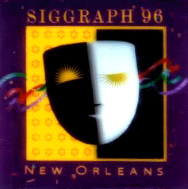

SIGGRAPH
96
New Orleans
August 4-9 1996
by Don Tanner
Summary
The 1996 SIGGRAPH Conference was held at the New Orleans Convention Center
on the banks of the Mississippi River. It was hot and humid but the New
Orleans ambiance and charm and the well appointed facilities made the event
a pleasure to attend. Add to that the Cajun food, blues and Cajun music,
and the world renown spectacle of Bourbon Street and you have week of not
only SIGGRAPH education and inspiration, but also of exotic fun. Whether
taking a short ride on a Mississippi riverboat ride, listening to Waylan
Tibedeau's Cajun band, or visiting the voodoo shops in the French Quarter,
or watching a Marti Gras video tape in a Bourbon Street bar, or sitting
on the banks of the River at LeMoines Landing outdoor bar and restaurant,
or walking through the Riverwalk, riverside shopping mall, New Orleans is
a trip, and a trip worth making. The world's computer graphics community
was there in force, and the entire event was well presented and attended
(30,000 +). Next year SIGGRAPH is back in Los Angeles at the LA Convention
Center, hopefully SJSU will be well represented there once again.
The Conference
WHAT WAS NEW?
I didn't see anything truly new and innovative from last year's SIGGRAPH,
although technology and applications seemed to be progressing somewhat.
Some of the sophistication of the products and demonstrations had elevated
in style or impact, or at least the presentation had become slicker -- but
where was the new breakthrough stuff? Maybe next year. There were some very
interesting things at SIGGRAPH 96, however, and as always it was a pleasure
to be there.
VIRTUAL REALITY
Virtual Reality technologies are continually developing, moving forward
and expanding to include new immersion technologies that are free from the
constrictions of hardwired, heavy and cumbersome head-mount displays. The
vision dome is a small free-standing structure with a 3D sound system and
rear projection video capable of allowing 10-12 people to simultaneously
experience a 360-degree immersive virtual reality. The developer of the
dome said he was working on a desktop single user version. Personal dome?
or VR lampshade on your head....?
MOTION CAPTURE AND REAL TIME CONTROL
There are several technologies being brought into production that are very
precise and included impeccable real time control of animation. Dancers
lightly wired could control cartoon figures projected behind them with no
perceivable delay and the actors could also speak dialogue into microphones
and have the animations appear to be the speakers with animated facial gesticulation.
As the price for these kinds of technologies continues to be reduced and
the ease of use and software package interfaces become more developed, new
art forms will undoubtedly develop.
THE BRIDGE
The Bridge was the name to designate a network connected art gallery which
extended between a gallery room at the convention center and the very well
appointed Contemporary Arts Center Gallery in downtown New Orleans. The
exhibitions shown included electronic network connected voodoo alters, and
network connected toilet stalls which featured electronic white boards for
sharing bathroom graffiti and interstall communication. There were many
other interesting and innovative works of art. One of the most intriguing
and beautiful was Beyond Pages, a remarkable work that coupled computer
control of a book paradigm with an interactive virtual reality experience
of using a book to trigger a computer-controlled audio and video displayed
in various forms, both in the book and around the room. Truly beautiful
and amazing.
ELECTRONIC THEATER
This year's Electronic Theater computer animation festival was remarkable
for the content, and though it still retained a distinct Hollywood flavor,
displayed some independent and innovative work. The major showing was in
the New Orleans historic Sanger Theater which was a spectacle in itself.
How did they make clouds continually pass over the horizon of the ceiling
and look so real? The pieces were a step up in production value and reflected
the immense creativity of the SIGGRAPH community.
WANGO
Wango was SJSU's entry into the
conference's user contributed display area, called the Digital Bayou. CADRE
students created an exploration of user interaction with the subject of
signs and symbols. The piece utilized Silicon Graphics hardware and Alais
software to allow the users to follow a thread of meaning by clicking a
mouse on different areas of an image. The project demonstrated the innovation
and competence of SJSU's CADRE program.